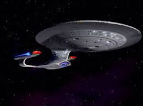
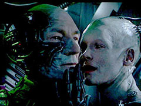
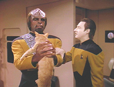

Bootstrap Homework
Teaching you to copy and paste since 2011
Toggle navigation
Star Trek
USS Leyte Gulf
USS Yangtzee Kiang
USS Yamato
USS Potemkin
USS Voyager
USS Yellowstone
Shuttlecraft Cochrane
Red Alert
All Hands to Battle Stations
Mr. Worf fire at will
Mr. Data what are the odds
Separated link
Yellow Alert
Blue Alert
Ship
Class
Command
Notable Appearances
USS Potemkin
NCC-18253
William Riker's assignment before his transfer to the USS Enterprise-D.
Part of the tachyon blockade during the Klingon Civil War. Participates in the Battle for Deep Space 9 and First Battle of Chin'toka.
USS Reliant
NCC-1864
Ship on which Pavel Chekov serves as first officer.
Assigned to Project Genesis and later hijacked by Khan Noonien Singh. Destroyed by Genesis Device detonation.
USS Leyte Gulf
NCC-71427
Commanded by Captain Aaron Juraj
First Starfleet Vessel to be infected by Nanites in Star Trek: Away Team.
USS Enterprise
NCC-1701-A
Captain James Tiberius Kirk
Every episode of the original series.


